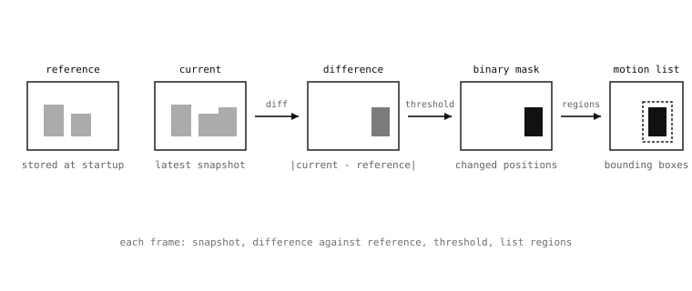

5.11. 프레임 차분¶
프레임 차분은 새로운 각 프레임을 저장된 기준 프레임과 비교하여 장면에서 변화한 부분을 찾아냅니다. 이는 무언가 발생하는 것을 감시하는 카메라 애플리케이션 – 모션 트리거 캡처, 침입 경고, “무언가 움직이면 영상을 저장” – 의 핵심 동작이며, 앞에서 다룬 픽셀 단위 연산만으로 완전히 구성됩니다. 즉 절대 차이, 임계값 처리, 그리고 영역 검색을 매 프레임마다 실행하는 것입니다.
5.11.1. 기본 파이프라인¶
첫 번째 단계는 기준을 획득하는 것입니다. 시작 직후 어느 시점에 – 이상적으로는 장면이 “변화 없음”을 의미하는 상태일 때 – 애플리케이션이 프레임을 캡처하여 보관합니다. 이 프레임이 이후의 모든 캡처가 비교될 기준선이 됩니다.
reference = csi0.snapshot().copy()
여기서 .copy() 가 중요합니다. csi0.snapshot() 자체는 버퍼가 프레임 버퍼에 존재하는 Image 를 반환하는데, 다음 snapshot 호출이 그 버퍼를 덮어쓰게 됩니다. .copy() 는 기준을 위한 별도의 버퍼를 할당하여 이 프레임의 픽셀이 다음 캡처 이후에도 살아남도록 합니다.
두 번째 단계는 매 프레임마다 실행됩니다. 새로운 이미지를 캡처한 다음, 그것과 기준 사이의 절대 차이를 계산합니다. 이것이 바로 difference() 가 하는 일입니다:
current = csi0.snapshot()
current.difference(reference)
이 호출 후, current 은 0이 아닌 픽셀이 기준을 찍은 이후 장면이 변화한 모든 위치를 표시하는 이미지를 담게 되며, 각 픽셀의 크기는 해당 위치에서 얼마나 변화했는지에 비례합니다.
세 번째 단계는 차이 이미지를 임계값 처리합니다. 원시 차이에는 항상 어느 정도의 노이즈가 포함됩니다. 센서 샷 노이즈로 인한 작은 밝기 변동, 조명 드리프트로 인한 그라디언트 변화, 약간의 카메라 움직임으로 인한 서브픽셀 흔들림 등입니다. 임계값 처리 단계 – 노이즈 바닥 위로 설정된 임계값을 사용하는 binary() – 는 실제 모션으로 간주할 만큼 큰 변화만 남기고 나머지는 버려서, 0이 아닌 픽셀이 실제로 변화한 위치인 이진 이미지를 생성합니다.
네 번째 단계는 그 이진 마스크의 연결된 영역 – 인접한 0이 아닌 픽셀들이 모여 연속된 패치를 이루는 그룹 – 을 추출합니다. find_blobs() 가 이를 한 번의 호출로 수행하여, 각각 경계 상자와 픽셀 수를 가진 모션 영역의 목록을 반환하며, 애플리케이션의 나머지 부분이 이를 활용할 수 있습니다.

프레임 차분 파이프라인: 기준 프레임과 현재 프레임이 차이 이미지가 되고, 임계값 처리는 그 차이를 변화한 위치의 이진 마스크로 바꾸며, 연결 영역 단계는 그 마스크를 모션 영역의 목록으로 바꿉니다.¶
5.11.2. 메모리 내 기준과 디스크 상의 기준¶
기본 파이프라인은 기준 프레임을 RAM에 보관합니다. 기준이 스크립트의 이번 실행에서 캡처되고 스크립트가 계속 실행되는 동안만 살아남으면 되는 경우에는 그것이 올바른 답입니다.
장기 실행 애플리케이션 – 전원 재시작 후에도 변화 감지를 재개해야 하는 카메라, 어떤 이전 시점 이후의 모든 변화를 감지해야 하는 간헐적 스크립트 – 의 경우, 기준 프레임은 실행 중인 스크립트보다 오래 살아남아야 합니다. 이때의 패턴은 기준을 디스크에 저장하는 것입니다:
csi0.snapshot().save("/sdcard/reference.bmp")
그리고 각 실행의 시작 시점에 그것을 다시 불러옵니다:
reference = image.Image("/sdcard/reference.bmp")
차분 로직은 변하지 않습니다. 캡처 사이에 기준이 어디에 존재하느냐만 달라집니다. 이 디스크 기반 변형에는 몇 가지 개선 사항이 자연스럽게 추가됩니다 – 타이머를 통한 기준의 자동 재캡처, 느린 조명 드리프트를 추적하기 위한 선택적 이동 평균 – 그러나 중심에 있는 대체는 동일합니다.
5.11.3. 광원 분리¶
동일한 빼기 패턴은 약간 다른 상황에서도 나타납니다. 바로 장면의 나머지에 대비하여 광원을 분리하는 것입니다. 요령은 “조명 꺼짐” 기준 – 검출하려는 대상(IR 비콘, 화면 픽셀, 상태 표시등)이 켜지지 않은 상태에서 찍은 프레임 – 을 캡처하고, 이후의 각 프레임에서 그 기준을 빼는 것입니다. 그 결과 두 캡처에서 장면이 동일했던 모든 곳은 밝기가 0이 되고, 광원이 실제로 켜진 곳에서만 밝기가 0이 아니게 됩니다.
5.11.4. difference 또는 sub 선택하기¶
어떤 산술 연산을 선택할지에 대한 실용적인 참고 사항입니다. difference() 는 변화의 절댓값 – 부호 없는 – 을 반환하므로, 어느 방향(밝아짐 또는 어두워짐)의 변화에도 민감하지만, 그 대가로 변화가 어느 방향으로 일어났는지는 애플리케이션에 알려주지 않습니다. 순수한 모션 검출에는 그것이 올바른 답입니다. 밝기가 어느 방향으로 바뀌었든 움직인 것은 모두 흥미롭기 때문입니다.
광원 검출의 경우, 켜진 픽셀은 항상 조명 꺼짐 기준보다 밝으므로, sub() (0에서 클리핑되는)가 더 정직한 선택입니다. 현재 프레임이 기준보다 어두운 곳(이는 꺼진 값 주변의 센서 노이즈일 것입니다)은 어디든 거짓된 “조명이 켜졌다” 신호를 보고하는 대신 0으로 클리핑됩니다.